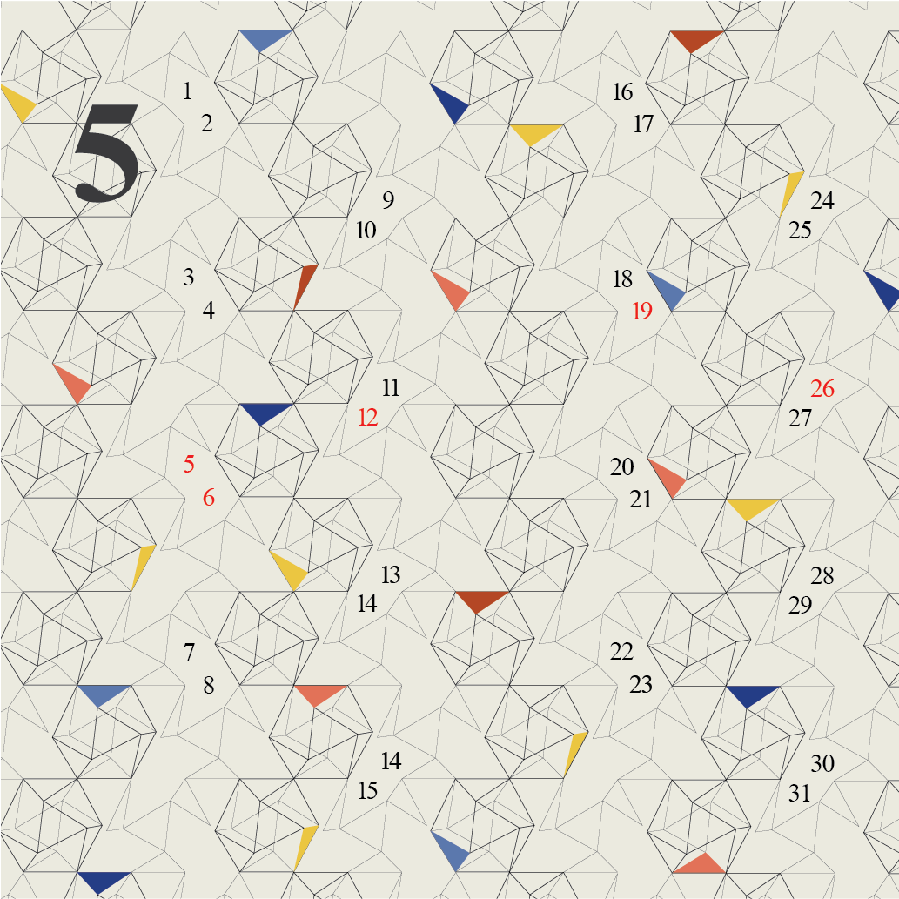
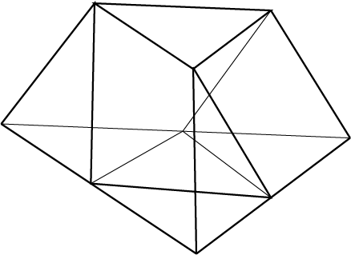

So Heum Hwang
about
playground
works
From Hexagon to Dome
a calendar series that explores how Buckminster Fuller developed geodesic dome by starting from a cubotahedron shape, making an analogy between the process of developing from a 2D triangle to a 3D dome.
TEAM
Individual Project
PERIOD
2019. 03 - 06
Final Design

Visual System
Fuller’s early experiment in geodesic dome came from cuboctahedron. Then, Fuller noticed how the cuboctahedron can be twisted through different phases producing a tetrahedon, which is called Jitterburg Transformation. After this stage, Fuller invented the geodesic dome with a omnitriangulated surface which enabled him to construct practical buildings. The last is based on tensegrity structure, a feather-like structure through tension.
The overall exploration of Fuller's development of geodesic dome is expressed in this series of pattern, and each stage in Fuller's pattern is expressed in different levels of colors. It focuses on the most basic colors which are red, blue and yellow; being in line with Fuller's architectural idology of focusing on the basics and being practical.

First Stage
The first series sketch was made in black and white, and it is more focused on basic shapes of cubotahedron and jitterburg shapes. It is also only focused on 2D shapes. This gives a rather flat feeling in the pattern, making it slightly dull.

Second Stage
Package Design